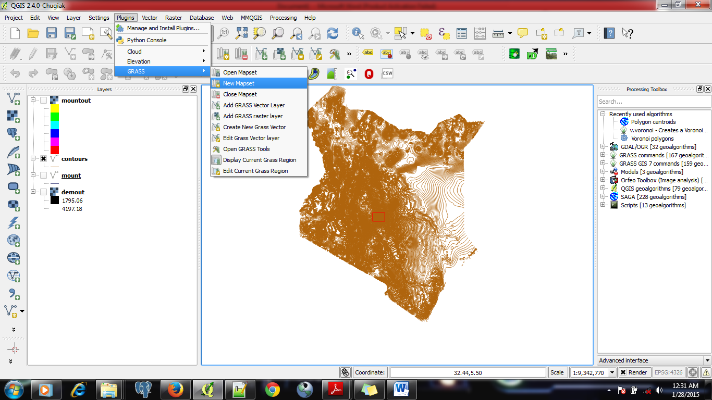
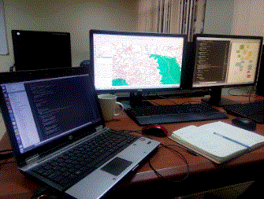
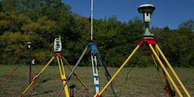
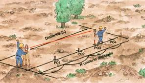
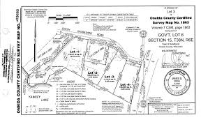
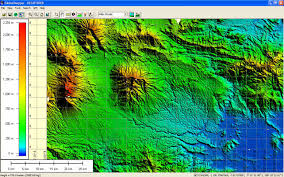
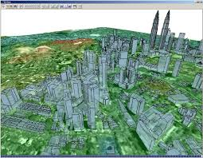

Dedan kimathi university of technology
Joined Dedan Kimathi University of Technology the Year 2014 Jason Kinyua Muriki Enrolled a bachelors Degree in Geomatics Engineering and Geospatial Information Systems {GEGIS} the Year 2014 in the Institute of Geomatics, GIS and Remote Sensing. The Course is scheduled for five [5] Academic years and therefore by 2019 Jason must have graduated unless Stated Otherwise.GEGIS is a five years engineering course that Trains on Geodynamics, Geospatial analytics , Remote Sensing Skills, computer/Information Techonology among Others.
He has.....
READ MORE
What Keeps Jason Moving???
.jpg)
.jpg) “People generally fall into one of three groups: the few who make things happen, the many who watch things happen, and the overwhelming majority who have no notion of what happens. Every person is either a creator of fact or a creature of circumstance. He either puts color into his environment, or, like a chameleon, takes color from his environment.”
“People generally fall into one of three groups: the few who make things happen, the many who watch things happen, and the overwhelming majority who have no notion of what happens. Every person is either a creator of fact or a creature of circumstance. He either puts color into his environment, or, like a chameleon, takes color from his environment.”
1. The Church
 I [Jason] am a believer in three trinity of the sovereign God. " God The Father, God The Son and God The Holy Spirit."
I [Jason] am a believer in three trinity of the sovereign God. " God The Father, God The Son and God The Holy Spirit." Have been brought up in a christ knowing family, Thanks To My Parents : John Kinyua and Grace kainda.
Father and Mother, I appreciate that you introduced me to This amazing God and laid a Foundation for me. You are a great Treasure of My Heart.
Exodus 23 : 25...,
So you shall serve the LORD your God, and He will Bless your Bread and your water. And I[The LORD] will take sickness away from the midst of you.... aI will Send My FEAR before you...." NKJV

2. Friends and Family
This is the core reason why I find Joy living every Second of my life. Friends and falimily is a valuable thing that if you lose, to restore is next to impossibility.Family, Friends . Along with self-integrity, are the three things that are absolutely required in order to live a self-fulfilled and happy life.
Family should always come first. They are your blood and your heritage. Family blood lines give you a sense of who you are and where you came from. Like anyone else, family members don't always agree and they don't always get along - in some cases some family members stop talking to each other entirely for stretches of time, but they are still family and when push comes to shove, they are always there for you no matter what, through good times and bad.
Some friends are close like family and will stick by your side as such. However, many are not. Some friends are 'friends of the moment', the year, the decade, etc, but sometimes friends eventually move on. After all, they are not tied to you like your family is.
15 REASONS why Family and friends are Important
The Importance of Friends to the Family
READ MORE3. Motivations and Inspirations
For One to succeed in a Competitive society like this of ours, There must be a point of challege that inpires one to keep on persuing His/Her dreams despite getting weary. This is the magic of Inspirations and Motivational stuff.a) Shake off Your Problems
A man’s favorite donkey falls into a deep precipice; He can’t pull it out no matter how hard he tries; He therefore decides to bury it alive. Soil is poured onto the donkey from above. The donkey feels the load, shakes it off, and steps on it; More soil is poured. It shakes it off and steps up; The more the load was poured, the higher it rose; By noon, the donkey was grazing in green pastures.b) The Blind Girl
There was a blind girl who hated herself just because she was blind. She hated everyone, except her loving boyfriend. He was always there for her. She said that if she could only see the world, she would marry her boyfriend. One day, someone donated a pair of eyes to her and then she could see everything, including her boyfriend. Her boyfriend asked her, “Now that you can see the world, will you marry me?” The girl was shocked when she saw that her boyfriend was blind too, and refused to marry him. Her boyfriend walked away in tears, and later wrote a letter to her saying:c) Don't Lough Alone
The class teacher asks students to name an animal that begins with an “E”. One boy says, “Elephant.” Then the teacher asks for an animal that begins with a “T”. The same boy says, “Two elephants.” The teacher sends the boy out of the class for bad behavior. After that she asks for an animal beginning with “M”. The boy shouts from the other side of the wall: “Maybe an elephant!”More Stories
READ MORE4. Funny Articles
This boredom will kill me
A few years ago, school holidays were something to look forward to. Not because we would be resting, but because it would be an opportunity to make an extra shilling. Not anymore. The government, in its so-called wisdom, woke up one day on the wrong side of the bed and declared holiday tuition illegal in public schools. For those of you who have been wondering, that is where the education sector started collapsing. However, with no serious minister to implement this, we continued with weekend and holiday tuition secretly. But with Magufuli’s cousin ....Mwalimu Andrew Daily Nation
READ MORECOURSE SKILLS [GEGIS]
.jpg)
Remote Sensing
 Getting Information about a Phenomen without being in contact with it.
Getting Information about a Phenomen without being in contact with it.
Satellites being The major platform used to Remote Sense.
Applied in Environmental monitoring, Making Valid Predictions etc...
 We perceive the surrounding world through our five senses. Some senses (touch and taste) require contact of our sensing organs with the objects.
However, we acquire much information about our surrounding
through the senses of sight and hearing which do not require
close contact between the sensing organs and the external objects.
In another word, we are performing Remote Sensing all the time.
We perceive the surrounding world through our five senses. Some senses (touch and taste) require contact of our sensing organs with the objects.
However, we acquire much information about our surrounding
through the senses of sight and hearing which do not require
close contact between the sensing organs and the external objects.
In another word, we are performing Remote Sensing all the time.
READ MORE
Geospatial information systems [GIS]
 Involves Making Decisions Based on Accurate Supportive Data.Computer Based Technology in which Spatially referenced data is analysed using customised / specialised Professional softwares to produce information that can be used to solve various environmental problems and make viable decisions. 
Examples of softwares used:
A geographic information system (GIS) lets us visualize, question, analyze, and interpret data to understand relationships, patterns, and trends. GIS benefits organizations of all sizes and in almost every industry. There is a growing interest in and awareness of the economic and strategic value of GIS.
READ MORE
Surveying
  Surveying and land surveying is the measurement and mapping of our surrounding environment using mathematics, specialised technology and equipment. Surveyors measure just about anything on the land, in the sky or on the ocean bed. They even measure polar ice-caps.How Survey Is Done & Who is A Surveyor
 Land surveyors work in the office and in the field – from suits to boots. Out in the field, they use the latest technology such as high order GPS, Robotic Total Stations (Theodolites), and aerial and terrestrial scanners to map an area, making computations and taking photos as evidence. In the office, Surveyors then use sophisticated software, such as Auto-cad to draft plans and map the onsite measurements. Surveyors work on a diverse variety of projects from land subdivision and mining exploration, to tunnel building and major construction, which means no two days are the same. They are experts in determining land size and measurement. They also give advice and provide information to guide the work of engineers, architects and developers.READ MORE
Global Mapper
 A GIS Tool used To Analyse Properties of the Terrain.in combination With AutoCAD , Global Mapper can be used to simmulate various applications such as infrastucture ect. 
READ MORE
AutoCAD

 Software that was invented by a group of Engineers that was meant to Simplify Archrects and Engineering Drawing Works.
Software that was invented by a group of Engineers that was meant to Simplify Archrects and Engineering Drawing Works.
AutoCAD provides its users with an intuitive user-interface that comes with built-in design lay-outs. These lay-outs include numerous templates that were specifically designed for architectural planning and building construction.
AutoCAD Is used as, Among other uses
- An Architectural Planning Tool
- An Engineering Drafting Tool
- Graphic Design Tool
- 3D Printing and Fashion Industry
- Industrial Design Tool